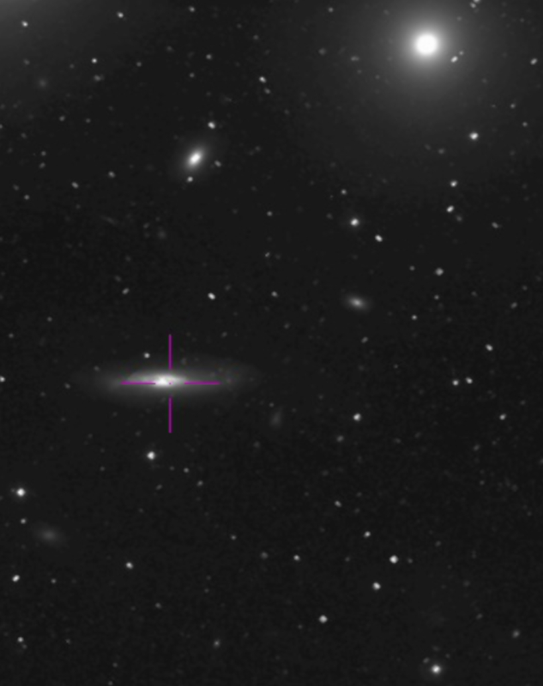

Group By:

This is a front end visualization prototype for CIRADA projects. This tool was developed for VLASS, but may have more projects in the future. This tool was created by Melanie Szpigiel, Professor Jayanne English, and Michelle Boyce (University of Manitoba) in 2021.